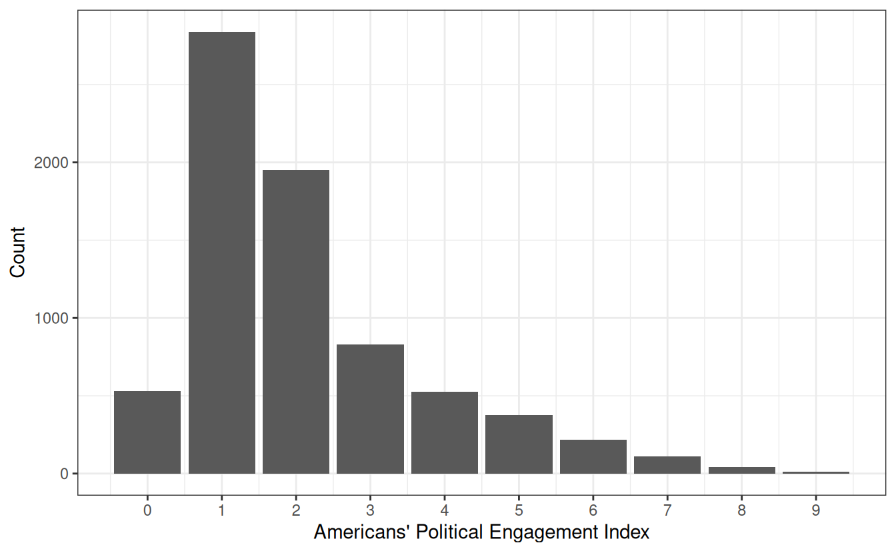

- racial attitudes
- partyid3
- relig.how.often
- social.class
- trust.media
- marital
- active.duty.mil
- allow.refugees
- divided.govt

| 1. Democrat | 2. Independent | 3. Republican | |
|---|---|---|---|
| negative_racial_attitudes_pct.Min. | 0.000 | 0.000 | 0.000 |
| negative_racial_attitudes_pct.1st Qu. | 0.188 | 0.250 | 0.312 |
| negative_racial_attitudes_pct.Median | 0.250 | 0.375 | 0.438 |
| negative_racial_attitudes_pct.Mean | 0.301 | 0.371 | 0.451 |
| negative_racial_attitudes_pct.3rd Qu. | 0.438 | 0.500 | 0.562 |
| negative_racial_attitudes_pct.Max. | 1.000 | 1.000 | 1.000 |
| 1. Every week | 2. Almost every week | 3. Once or twice a month | 4. A few times a year | 5. Never | |
|---|---|---|---|---|---|
| negative_racial_attitudes_pct.Min. | 0.000 | 0.000 | 0.000 | 0.000 | 0.000 |
| negative_racial_attitudes_pct.1st Qu. | 0.250 | 0.250 | 0.250 | 0.250 | 0.250 |
| negative_racial_attitudes_pct.Median | 0.312 | 0.375 | 0.375 | 0.438 | 0.438 |
| negative_racial_attitudes_pct.Mean | 0.352 | 0.382 | 0.378 | 0.395 | 0.424 |
| negative_racial_attitudes_pct.3rd Qu. | 0.500 | 0.500 | 0.500 | 0.500 | 0.562 |
| negative_racial_attitudes_pct.Max. | 1.000 | 1.000 | 1.000 | 1.000 | 1.000 |
| 1. Lower class | 2. Working class | 3. Middle class | 4. Upper class | |
|---|---|---|---|---|
| negative_racial_attitudes_pct.Min. | 0.000 | 0.000 | 0.000 | 0.000 |
| negative_racial_attitudes_pct.1st Qu. | 0.188 | 0.250 | 0.250 | 0.188 |
| negative_racial_attitudes_pct.Median | 0.375 | 0.375 | 0.375 | 0.312 |
| negative_racial_attitudes_pct.Mean | 0.370 | 0.386 | 0.367 | 0.326 |
| negative_racial_attitudes_pct.3rd Qu. | 0.500 | 0.500 | 0.500 | 0.438 |
| negative_racial_attitudes_pct.Max. | 1.000 | 1.000 | 1.000 | 1.000 |
| 1. None | 2. A little | 3. A moderate amount | 4. A lot | 5. A great deal | |
|---|---|---|---|---|---|
| negative_racial_attitudes_pct.Min. | 0.000 | 0.000 | 0.000 | 0.000 | 0.000 |
| negative_racial_attitudes_pct.1st Qu. | 0.250 | 0.250 | 0.188 | 0.188 | 0.125 |
| negative_racial_attitudes_pct.Median | 0.438 | 0.375 | 0.312 | 0.312 | 0.250 |
| negative_racial_attitudes_pct.Mean | 0.422 | 0.391 | 0.350 | 0.319 | 0.286 |
| negative_racial_attitudes_pct.3rd Qu. | 0.562 | 0.500 | 0.500 | 0.438 | 0.438 |
| negative_racial_attitudes_pct.Max. | 1.000 | 1.000 | 1.000 | 1.000 | 1.000 |
| 1. Married: spouse present | 2. Married: spouse absent {VOL - video/phone only} | 3. Widowed | 4. Divorced | 5. Separated | 6. Never married | |
|---|---|---|---|---|---|---|
| negative_racial_attitudes_pct.Min. | 0.000 | 0.188 | 0.000 | 0.000 | 0.000 | 0.000 |
| negative_racial_attitudes_pct.1st Qu. | 0.250 | 0.250 | 0.250 | 0.188 | 0.188 | 0.188 |
| negative_racial_attitudes_pct.Median | 0.375 | 0.438 | 0.375 | 0.312 | 0.312 | 0.375 |
| negative_racial_attitudes_pct.Mean | 0.381 | 0.375 | 0.373 | 0.356 | 0.349 | 0.359 |
| negative_racial_attitudes_pct.3rd Qu. | 0.500 | 0.500 | 0.500 | 0.500 | 0.500 | 0.500 |
| negative_racial_attitudes_pct.Max. | 1.000 | 0.500 | 1.000 | 1.000 | 1.000 | 1.000 |
| 1. Now serving on active duty | 2. Previously served on active duty but not now on active duty | 3. Have never served on active duty | |
|---|---|---|---|
| negative_racial_attitudes_pct.Min. | 0.000 | 0.000 | 0.000 |
| negative_racial_attitudes_pct.1st Qu. | 0.250 | 0.250 | 0.250 |
| negative_racial_attitudes_pct.Median | 0.406 | 0.438 | 0.375 |
| negative_racial_attitudes_pct.Mean | 0.392 | 0.416 | 0.365 |
| negative_racial_attitudes_pct.3rd Qu. | 0.500 | 0.562 | 0.500 |
| negative_racial_attitudes_pct.Max. | 1.000 | 1.000 | 1.000 |
| 1. Favor a great deal | 2. Favor a moderate amount | 3. Favor a little | 4. Neither favor nor oppose | 5. Oppose a little | 6. Oppose a moderate amount | 7. Oppose a great deal | |
|---|---|---|---|---|---|---|---|
| negative_racial_attitudes_pct.Min. | 0.000 | 0.000 | 0.000 | 0.000 | 0.000 | 0.000 | 0.000 |
| negative_racial_attitudes_pct.1st Qu. | 0.062 | 0.250 | 0.250 | 0.312 | 0.312 | 0.312 | 0.312 |
| negative_racial_attitudes_pct.Median | 0.250 | 0.312 | 0.438 | 0.438 | 0.469 | 0.500 | 0.500 |
| negative_racial_attitudes_pct.Mean | 0.237 | 0.347 | 0.405 | 0.435 | 0.478 | 0.466 | 0.498 |
| negative_racial_attitudes_pct.3rd Qu. | 0.375 | 0.500 | 0.562 | 0.562 | 0.625 | 0.625 | 0.625 |
| negative_racial_attitudes_pct.Max. | 1.000 | 1.000 | 1.000 | 1.000 | 1.000 | 1.000 | 1.000 |
| 1. Better when one party controls both | 2. Better when control is split | 3. It doesn't matter | |
|---|---|---|---|
| negative_racial_attitudes_pct.Min. | 0.000 | 0.000 | 0.000 |
| negative_racial_attitudes_pct.1st Qu. | 0.250 | 0.250 | 0.250 |
| negative_racial_attitudes_pct.Median | 0.375 | 0.375 | 0.375 |
| negative_racial_attitudes_pct.Mean | 0.382 | 0.361 | 0.384 |
| negative_racial_attitudes_pct.3rd Qu. | 0.500 | 0.500 | 0.500 |
| negative_racial_attitudes_pct.Max. | 1.000 | 1.000 | 1.000 |